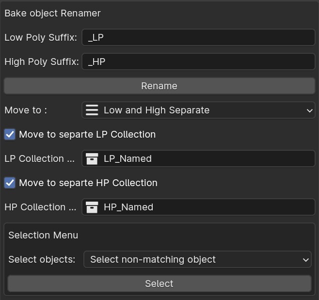

Renamer Operator
Rename Low & High Poly Objects Appropriately

Properties:
LP_Suffix: Set suffix that will be added to the Low Poly ObjectHP_Suffix: Set suffix that will be added to the High Poly ObjectLP Collection: Set name for the Low poly collection to hold LP ObjectsHP Collection: Set name for the Low poly collection to hold HP ObjectsOperator: Rename Button to run the algorithm and rename object
Example:
- Select two objects
active_objectandsecond_object, when the algorithm runs, it will rename theactive_objectand add LP suffix to it. And adds the HP suffix to the non-active object. - If you have toggled the
Move to Collectionproperty toON. It will move the respective object with the respective name to the respective Collection. - For example, if you had LP prefix as
_LP, and HP prefix as_HP, and name will become:my_obj_name__LPandmy_obj_name_HPfor HP, and they will be moved to theLPandHPCollection respectively.
Selection Menu
Requirements: Works with the collections and Suffix of the Rename operators. Like LP & HP suffix and LP & HP Collection Names.
Options
Select non-matching object: Search for objects that doesn't have matching counterparts in the opposite collection. Like finding if no HP object ofabc_LPSelect significant other: Selects the HP object of selected LP objects or vice versa. Helpful when needed to select counter object of selected objects.